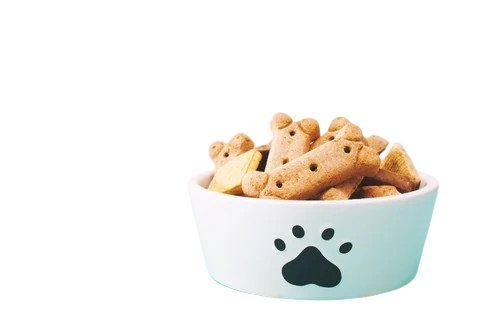
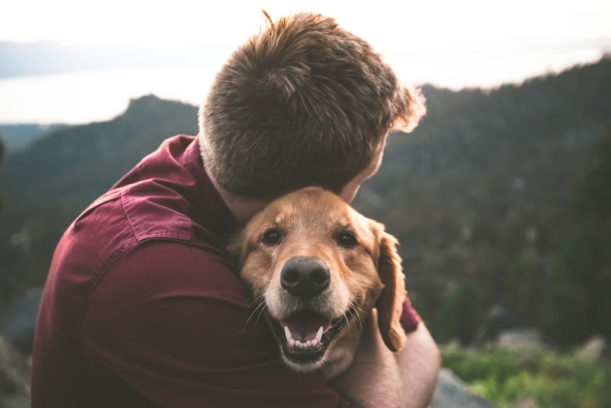

Find the Right Home. Find the Right Companion.


Our Mission
Our platform aims to help families adopt responsibly and support pet owners who need to rehome with care and compassion.
WHO ARE WE?
We are a group of students passionate about animal welfare and responsible pet ownership. This platform was created as part of our academic project.
As students, we believe technology can be used to create positive change. Through this website, we aim to promote responsible adoption, easier rehoming, and awareness about the lifelong commitment of caring for a pet.